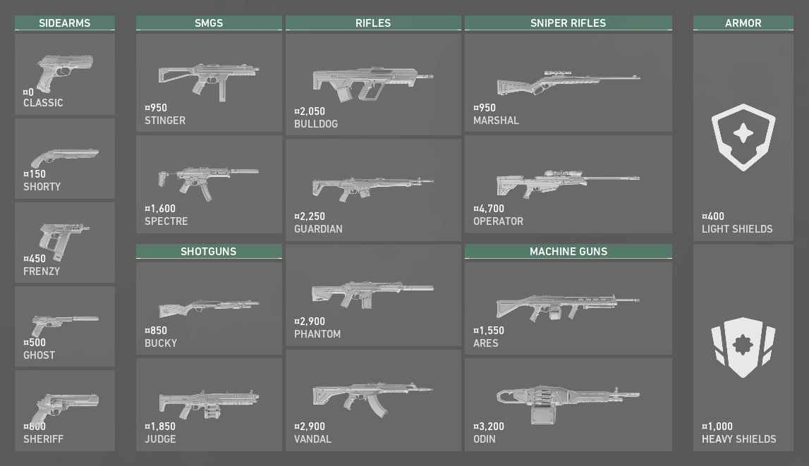

Different situations require different guns like the Phantom logically it beats the Vandal at close ranges but falls off longer range. Depending on which situation youre in its best to know when and where which guns should be used. when playing closer ranges using a faster gun works best compared to a gun that does more damage but shoots slower.
Saving after a first round loss is the best course of action when buying on a loss youre almost guaranteed to lose, on the other hand winnng the first pistol round and buying guns like the spectre is great because in most cases is almost always guarantees a second round win because the other team will mostlikely be saving having worse guns then your team.
In this game the amount of credits you earn is based off rounds won, kills, and spike plants when the game is won 2900 credits are given to the team that won the round when the round is loss only 1900 credits are given but when the round is loss three times in a row the amount of credits given to the loser is increased per round lost up to three rounds. The first round you should always purchase a weapon, abilities, or sheild, unless you are planning to op in the next two rounds people sometimes dont and save money that causes rounds to be lost going in on a pistol with 100 health, no abilities, and a classic. Most players opt to buy a sherif or a ghost on pistol rounds becuase a ghost is a weapon that can be spamed and is a one shot headshot if the enemy did not purchase and armour. and a sherif alot harder to use is a one shot headshot to someone that has full armour and a two shot body shot to someone who didnt opt to purchase armour.